Allgemeiner Hinweis
Die nachfolgend aufgeführten Beispiele dienen als Orientierungshilfe und ersetzen nicht die objektbezogene Gefährdungsbeurteilung.
Beispiel 1
Schneeräumung auf einem Dach mit geneigter Dachfläche und Abrutschgefahr
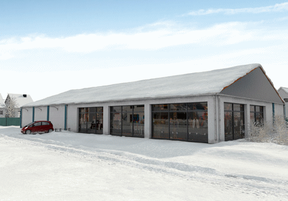
Abb. 1 Darstellung des Objektes
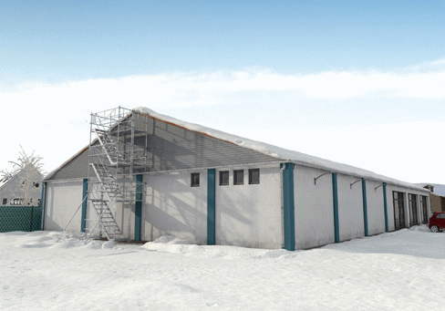
Abb. 2 Darstellung des Objektes
Das Gebäude hat keine Zugangsmöglichkeiten zum Dach. Deshalb befinden sich für die Ermittlung der Schneehöhe vorab installierte Pegelmesser auf dem Dach (siehe Abschnitt 9). Nach Berechnung der Schneelast, der Wetterprognose und auf Grund der zu erwartenden Zusatzlasten (siehe Abschnitt 8) wurde festgestellt, dass eine Räumung erforderlich ist.
Im Rahmen des vorab festgelegten Räumkonzeptes wurde rmittelt, dass für die Durchführung der Maßnahme keine Risiken hinsichtlich des Versagens der Dachkonstruktion bestehen. Zudem wurde die Dachfläche (Pfannendach) im Firstbereich mit einer Anschlageinrichtung (Schiene) mit zwei beweglichen Anschlagpunkten auf jeder Seite ausgestattet (Abbildung 3).
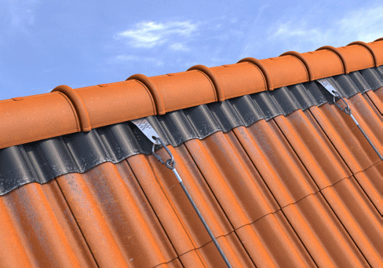
Abb. 3 Anschlageinrichtung (Schiene) mit 2 beweglichen Anschlagpunkten auf jeder Seite
Für die Durchführung der Räumung wird an der Giebelseite ein Treppenturm aufgestellt, um einen direkten Zugang zum First und der dort vorhandenen Anschlageinrichtung zu ermöglichen. Die Höhe des Treppenturms wird so gewählt, dass sich der Geländerholm auf Firsthöhe befindet (Abbildung 2).
Um das Gebäude ist eine Sicherheitszone (Breite gleich Traufhöhe) eingerichtet. Eine Schneelagerstätte ist auf dem Parkplatz eingerichtet (Abbildung 4).
Durchführung der Schneeräumung
Aus statischen Gründen wird eine streifenweise parallel zum Ortgang verlaufende Räumung festgelegt, die gleichzeitig auf beiden Dachhälften durchgeführt wird.
Auf Grund der Rutschgefahr auf der Dachfläche werden die Arbeiten seilunterstützt durchgeführt. Das Räumpersonal ist mit Auffanggurten ausgestattet. Die Auffanggurte besitzen eine vordere Auffangöse (für das Sicherungssystem) und eine Positionierungsöse (für das Positionierungssystem). Als Positionierungssystem wird ein Tragseil mit Seileinstellvorrichtungen für die Auf- und Abwärtsbewegung auf der Dachfläche verwendet. Das Sicherungssystem besteht aus einem mitlaufenden Auffanggerät mit beweglicher Führung. Dieses System ist für Arbeiten auf geneigten Flächen und auf Grund einer Zulassung für die zu erwartende Kantenbeanspruchung bei einem möglichen Sturz über die Traufe geeignet (Abbildung 5).
Das Räumpersonal sichert sich am Übergang vom Treppenturm auf die Dachfläche an der Anschlageinrichtung. Die Räumung erfolgt mit Schneeschiebern von oben nach unten, im Abstand von 2 m zum Ortgang. Dabei werden beide Dachhälften gleichzeitig geräumt (Abbildung 5 und 6). Damit der Schneeschieber nicht herabfallen kann, wird er mit einer Sicherungsleine am Auffanggurt befestigt.
Der Schnee wird von den Abwurfstellen mittels Schaufelradlader zur Schneelagerfläche transportiert (Abbildung 6).
Für den Fall eines Sturzes über die Dachkante ist vorgesehen, die im Auffanggurt hängende Person durch die vor Ort anwesenden Beschäftigten mittels Abseilgerät mit Hubeinrichtung nach unten zu retten.
Allgemeiner Hinweis
|
| Die Arbeitszeiten werden in Abhängigkeit von den Witterungsbedingungn und der Arbeitsbelastung (maximal 2 Stunden, dann jeweils Pause/Aufwärmen) festgelegt. |
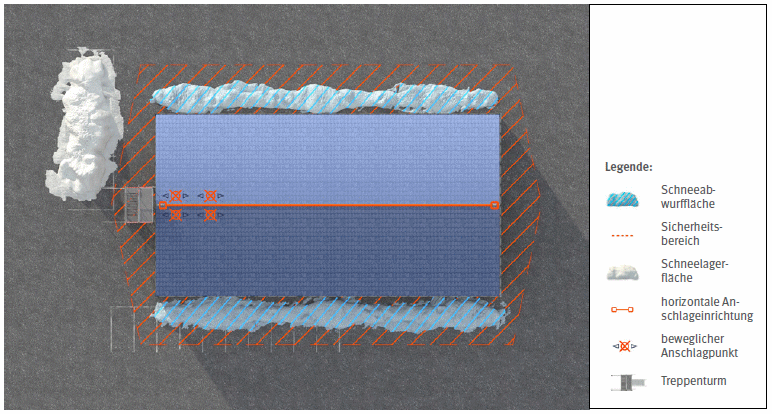
Abb. 4 Darstellung der Sicherheitszone, des Zugangs zur Dachfläche, der Abwurfstellen und der Schneelagerfläche
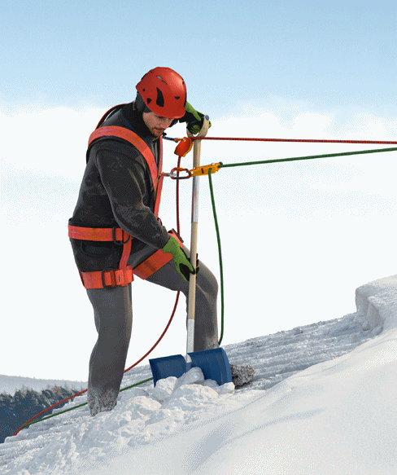
Abb. 5 Schneeräumung mit Schneeschieber
Anzahl und Qualifikation der eingesetzten Mitarbeiterinnen/ Mitarbeiter
Eine aufsichtführende Höhenarbeiterin bzw. ein aufsichtführender Höhenarbeiter (Level 3 mit Qualifikation Bauwesen) und 3 Höhenarbeiterinnen bzw. Höhenarbeiter (Level 1) nach TRBS 2121 Teil 3 werden für die Durchführung von seilunterstützten Zugangs- und Positionierungsverfahren eingesetzt.
Das Personal ist in die Umsetzung des Räumkonzeptes unterwiesen. Im Rahmen der Unterweisung wurde u. a. auf die Auswahl der Maßnahmen auf Grund der Gefährdungsbeurteilung eingegangen. Darüber hinaus wurden praktische Übungen unter vergleichbaren Arbeitsplatzbedingungen durchgeführt.
Eine Person ist für das Führen des Radladers geeignet, befähigt und eingewiesen.
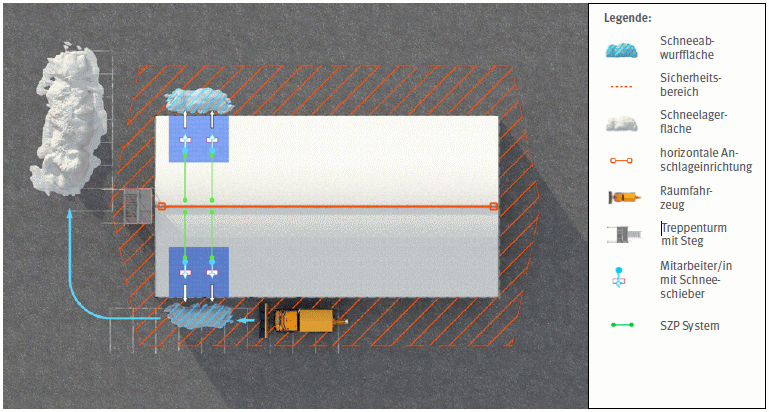
Abb. 6 Schematischer Ablauf der Schneeräumung
Beispiel 2
Schneeräumung auf einem Flachdach
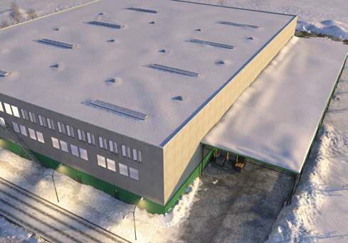
Abb. 1 Darstellung des Objektes
Die Ermittlung der Schneehöhen erfolgte durch eine direkte (manuell mittels Schneerohr) und indirekte Messung (Dehnmessstreifen) (siehe Abschnitt 9). Unter Berücksichtigung der berechneten Schneelast und auf Grund der zu erwartenden Zusatzlasten (siehe Abschnitt 8) wurde festgestellt, dass eine Räumung des Hallendachs erforderlich ist. Für das tieferliegende Schleppdach ist noch keine Räumung angezeigt.
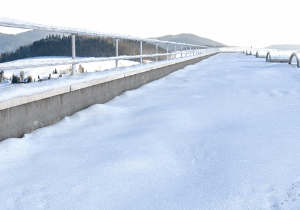
Abb. 2 Randsicherung
In der Dachfläche (Foliendach) befinden sich Lichtbänder und Lichtkuppeln. Zum Schutz gegen Durchsturz sind diese mit Überdeckungen und Unterfangungen ausgestattet. Zum Schutz gegen Absturz nach Außen sind in Teilbereichen permanente Randsicherungen angeordnet (Abbildung 2). In den Bereichen, wo aus konstruktiven Gründen diese Sicherungen nicht montiert werden konnten, sind Einzelanschlagpunkte parallel zur Absturzkante installiert.
Der Zugang erfolgt über zwei temporär jeweils auf gegenüberliegenden Seiten erstellte Treppentürme, die auch in das Rettungskonzept einbezogen werden (Abbildung 4). Dazu wird vorab der Schnee im Bereich der Aufstellflächen geräumt. Die Dachfläche wird über Laufstege mit Seitenschutz betreten (Abbildung 3).
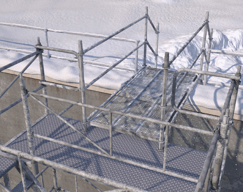
Abb. 3 Zugang über einen Laufsteg
An den Abwurfstellen ist eine Sicherheitszone (Abstand zum Gebäude gleich halbe Höhe, Breite 5,0 m) eingerichtet. Die Schneelagerung erfolgt auf einer Freifläche (Abbildung 4).
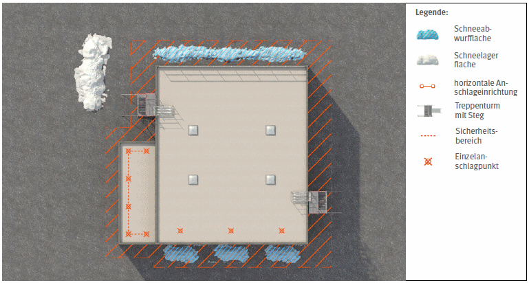
Abb. 4 Darstellung der Sicherheitszone, des Zugangs zur Dachfläche, der Abwurfstellen und der Schneelagerfläche
Durchführung der Schneeräumung
Für die Durchführung der Schneeräumung bieten sich zwei Verfahren an, wobei die Transportwege auf dem Dach zur Vermeidung von Stolpergefahren und Beschädigungen (Blitzschutz, Dachabläufe) entsprechend festgelegt sind (Abbildung 5).
Verfahren 1: Schneeräumung mittels Fräse und Kollektivschutz
Dieses Verfahren wird von fünf Personen durchgeführt. Eine Person bedient die Schneefräse an der Abwurfkante (Traufkante).
Dort wird mit der Schneefräse ein zwei Meter breiter Arbeitsraum geschaffen. Damit das Foliendach möglichst wenig beschädigt wird, werden auf dem Dach Schneewannen für den streifenweisen Transport des Schnees zur Abwurfkante verwendet. Der Abwurf erfolgt von dort nach unten (nicht auf das Schleppdach) durch eine parallel zur Abwurfkante fahrende Schneefräse (Abbildung 6). Damit die Gebäudeaußenwände am Boden nicht durch hohe Schneehaufen überlastet werden (seitlicher Druck), muss der abgeworfene Schnee permanent mittels Radlader zur Lagerfläche abtransportiert werden.
Verfahren 2: Schneeräumung mittels Schneewannen und der Verwendung von persönlicher Schutzausrüstung gegen Absturz
Dieses Verfahren wird von zehn Personen durchgeführt. Damit das Foliendach nicht beschädigt wird, werden Schneewannen zur Räumung eingesetzt (Abbildung 7). Aus statischen Gründen wurde eine streifenweise parallel zum Ortgang verlaufende Räumung festgelegt. Dabei räumen sieben Personen den Schnee mit den Schneewannen von der Dachmitte zu den außerhalb des absturzgefährdeten Bereichs gelegenen Übergabestellen. Drei Personen arbeiten unter Verwendung eines Rückhaltesystems (Auffanggurt, Höhensicherungsgerät ausgestattet mit einer Verbindungsmittellänge mit der das Erreichen der Absturzkante ausgeschlossen ist) zwischen den Übergabestellen und den Abwurfstellen. Sie übernehmen die Schneewannen und werfen den Schnee an der Abwurfstelle ab (jedoch nicht auf das Schleppdach). Um den Abwurf zu erleichtern, wird im Bereich der Attika eine Schneerampe angeordnet.
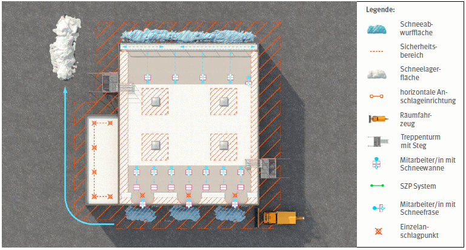
Abb. 5 Darstellung der Schneeräumung mittels Kollektivschutz und Fräse bzw. mittels Schneewannen mit Anschlageinrichtung und Rückhaltesystem
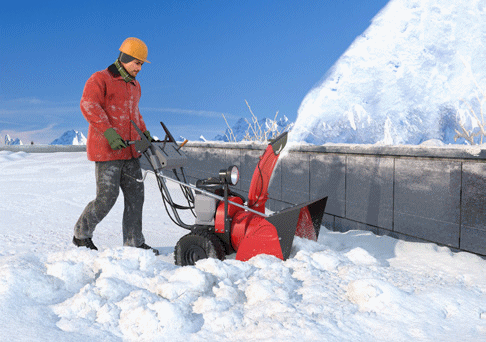
Abb. 6 Prinzip der Verwendung einer Schneefräse
Allgemeiner Hinweis
|
| Die Arbeitszeiten werden in Abhängigkeit von den Witterungsbedingungn und der Arbeitsbelastung (maximal 2 Stunden, dann jeweils Pause/Aufwärmen) festgelegt. |
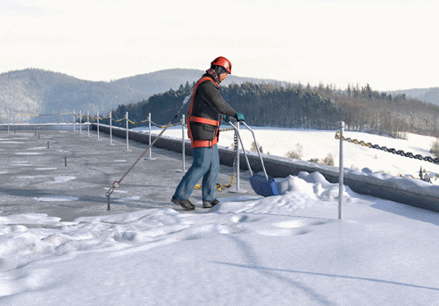
Abb. 7 Prinzip der Verwendung von Rückhaltesystem mit Schneewanne
Anforderungsprofil der ausführenden Personen
Das Personal ist unterwiesen in die Umsetzung des Räumkonzeptes. Im Rahmen der Unterweisung wurde u. a. auf die Auswahl der Maßnahmen auf Grund der Gefährdungsbeurteilung eingegangen. Darüber hinaus wurden für die drei Personen zur Verwendung des Rückhaltesystems praktische Übungen unter vergleichbaren Arbeitsplatzbedingungen durchgeführt.
Eine Person ist für das Führen des Schaufelradladers geeignet, befähigt und eingewiesen.